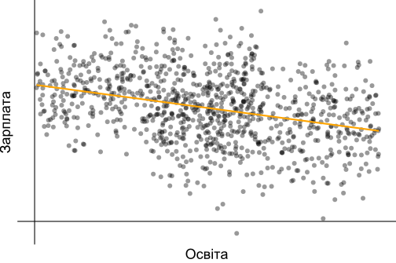

4 Множинна лінійна регресія
4.1 Загальні відомості
Множинна лінійна регресія — варіант регресійної моделі, де в якості предикторів використовується більше однієї змінної 4.1. В більшості випадків це підвищує ефективність моделі в порівнянні з парною регресією.
Рисунок 4.1: Умовне зображення множинної регресії
Загальне рівняння множинної лінійної регресії: \[ y_i = \beta_0 + \beta_0x_{i,1} + \beta_0x_{i,2} + \dots + \beta_kx_{i,k} + u_i, i = 1,\dots,n \tag{4.1} \] де
\(y_i\) — залежна змінна,
\(x_{i,m}\) — незалежні змінні, \(m = 1,\dots,k\),
\(u_i\) — випадкові помилки,
\(k\) — кількість незалежних змінних,
\(n\) — кількість спостережень.
Всі передумови використання МНК залишаються тими самими, що і раніше, збільшується тільки кількість предикторів.
4.2 МНК для множинної регресії
Для розрахунку оцінок параметрів моделі множинної регресії за МНК зручніше використовувати векторно-матричну форму запису.
Вектор значень залежної змінної: \[ Y = \begin{pmatrix} y_1 \\ y_2 \\ \dots \\ y_{n-1} \\ y_n \end{pmatrix} \tag{4.2} \]
Матриця незалежних змінних: \[ X = \begin{pmatrix} 1 & x_{1,1} & x_{1,2} & \dots & x_{1,k} \\ 1 & x_{2,1} & x_{2,2} & \dots & x_{2,k} \\ \dots & \dots & \dots & \dots & \dots \\ 1 & x_{n,1} & x_{n,2} & \dots & x_{n,k} \\ \end{pmatrix} \tag{4.3} \] Звертаю увагу, що в першому стовпчику матриці незалежних змінних записані тільки одиниці. Я дещо спрощу пояснення природи цього запису: це потрібно для розрахунку вільного параметру моделі \(\beta_0\).
Вектор випадкових помилок: \[ u = \begin{pmatrix} u_1 \\ u_2 \\ \dots \\ u_{n-1} \\ u_n \end{pmatrix} \tag{4.4} \] Вектор коефіцієнтів моделі: \[ \beta = \begin{pmatrix} \beta_1 \\ \beta_1 \\ \dots \\ \beta_k \end{pmatrix} \tag{4.5} \] Вектор оцінок коефіцієнтів моделі: \[ \hat\beta = \begin{pmatrix} \hat\beta_1 \\ \hat\beta_1 \\ \dots \\ \hat\beta_k \end{pmatrix} \tag{4.6} \] Для розрахунку МНК-оцінок параметрів моделі використовується формула: \[ \hat\beta = (X'X)^{-1}X'Y \tag{4.7} \]
4.3 Стандартні помилки оцінок параметрів множинної моделі
Для розрахунку стандартних помилок оцінок параметрів множинної моделі необхідно розглянути коваріаціну матрицю коефіцієнтів моделі: \[ \hat{V}(\hat\beta) = (X'X)^{-1}*S^2 \tag{4.7} \] де \[ S^2 = \frac{1}{n-k-1}\sum\limits^{n}_{i=1}u_i^2 \tag{4.8} \] Матриця \(\hat{V}(\hat\beta)\) має розмір \(k+1\) на \(k+1\), де на перетині \(i\)-го рядку та \(j\)-го стовпчика знаходиться незміщенна оцінка коефіцієнта коваріації між \(\hat\beta_i\) та \(\hat\beta_j\).
З матриці \(\hat{V}(\hat\beta)\) нас цікваить головна діагональ, оскільки на ній міститься незміщенна дисперсія оцінок параметрів моделі. Корінь квадратний з елементів головної діагоналі — це стандартні похибки оцінок параметрів моделі: \[ se(\hat\beta_j) = \sqrt{\hat{V_{jj}}} = \sqrt{\hat{var}(\hat\beta_j)} \tag{4.9} \]
4.4 Зміщенням при неврахуванні впливової змінної
Проста лінійна регресія може бути обтяжена так званим зміщенням при неврахуванні впливової змінної (omitted variable bias), що призводить до неправильних висновків у простій моделі (Wooldridge 2019). Така ситуація виникає у випадках коли:
ми не врахували змінну, що впливає на \(y\)
неврахована змінна корелює з пояснюючою змінної \(x_i\)
Для пояснення цього явища, розглянемо штучний приклад: \[ \text{Зарплата}_i = \beta_0 + \beta_1 \text{Освіта}_i + \beta_2 \text{Стать}_i + u_i \].
де
- \(\text{Освіта}_i\): кількість завершених років у школі
- \(\text{Стать}_i\) номінативна змінна статі (припустимо, що 1 - це чоловік, а 0 - це жінка).
тоді
- \(\beta_1\): надбавка за кожен рік навчання (при фіксованих інших змінних)
-
\(\beta_2\): надбавка за стать (при фіксованих інших змінних)
Якщо \(\beta_2 > 0\), тоді це вказую на дискримінацію жінок по оплаті праці.
Якщо ми сконцертруємо наше дослідження тільки на взаємозв’язок між заробітною платою і освітою, тоді впливова змінна “стать” буде враховуватись в залишках моделі:
\[ \text{Зарплата}_i = \beta_0 + \beta_1 \text{Освіта}_i + \left(\beta_2 \text{Стать}_i + u_i\right) \] \[ \text{Зарплата}_i = \beta_0 + \beta_1 \text{Освіта}_i + \varepsilon_i \] де \(\varepsilon_i = \beta_2 \text{Стать}_i + u_i\).
Але в такому випадку, навіть якщо \(\mathop{\boldsymbol{E}}\left[ u | X \right] = 0\), не буде виконуватись умова \(\mathop{\boldsymbol{E}}\left[ \varepsilon | X \right] = 0\) оскільки \(\beta_2 \neq 0\). Іншими словами \(\mathop{\boldsymbol{E}}\left[ \varepsilon | \text{Male} = 1 \right] = \beta_2 + \mathop{\boldsymbol{E}}\left[ u | \text{Male} = 1 \right] \neq 0\)
В результаті ми отримуємо зміщені оцінки параметрів моделі.
Давайте розглянемо приклад. Нехай модель генеральної сукупності виглядає наступним чином: \[ \text{Зарплата}_i = 20 + 0.5 \times \text{Освіта}_i + 10 \times \text{Стать}_i + u_i \] Але наша модель без врахування впливової змінної має наступну специфікацію: \[ \text{Зарплата}_i = \hat{\beta}_0 + \hat{\beta}_1 \times \text{Освіта}_i + e_i \] Ми використали певну вибірку спостережень і отримали наступну зміщену модель: \[\widehat{\text{Зарплата}}_i = 32.7 + -1.2 \times \text{Освіта}_i\] Візуально це буде виглядати так: 
Якщо ж включити в модель впливову змінну статі (жінки та чоловіки) 4.2, це суттєво має вплинути на оцінюванні параметри моделі. А незміщена модель набуває вигляду:
\(\widehat{\text{Зарплата}}_i = 22.3 + 0.1 \times \text{Освіта}_i + 9.1 \times \text{Стать}_i\)
Рисунок 4.2: Включення впливової змінної в модель
Існують певні методи боротьби з цим явищем:
Включати всі впливові змінні в модель. Але це буває можливо далеко не кожного разу.
Використання інструментальних змінних та двокроковий МНК. Проте і це не завжди допомагає.
4.6 Скорегований коефіцієнт детермінації
Розрахунок та інтерпретація коефіцієнту детермінації залишається аналогічним до простої лінійної регресії (3.22).
Проте \(R^2\) має суттєву особливість в множинній регресії: він характеризує наявність кореляції між незалежними і залежною змінною, але нічного не говорить про причинно-наслідкові зв’язки. Тому \(R^2\) не може бути використаний для порівняння простих і більш складних (з більшою кількістю незалежних змінних) моделей.
Але є значна проблема: додавання нових змінних до спеицифікації моделі призводить до збільшення \(R^2\). В деяких випадках він може залишитися незмінним, але точно не зменшитися. Це означає, що якщо бездумно додавати будь-які змінні в модель, вона може ставати кращою, але це оманливе відчуття.
Щоб продемонструвати цю проблему: - згенеруємо 10000 значень \(y\) - згенеруємо 10000 значень для кожної змінної від \(x_1\) до \(x_{1000}\) - побудуємо моделі регресії: - \(LM_1\): Регресія \(y\) на даних \(x_1\) - \(LM_2\): Регресія \(y\) на даних \(x_2\) - \(\dots\) - \(LM_{1000}\): Регресія \(y\) на даних \(x_{1000}\) - до кожної моделі розрахуємо \(R^2\) і подивимось на динаміку його зміни.
Зауважу, що жодного зв’язку між \(y\) та \(x_k\) не має.
set.seed(1234)
y <- rnorm(1e4)
x <- matrix(data = rnorm(1e7), nrow = 1e4)
x %<>% cbind(matrix(data = 1, nrow = 1e4, ncol = 1), x)
r_2 <- function(i) {
tmp_reg <- lm(y ~ x[,1:(i+1)]) %>% summary()
data.frame(
k = i + 1,
r2 = tmp_reg %$% r.squared,
r2_adj = tmp_reg %$% adj.r.squared
)
}
cl <- makeCluster(detectCores() - 1)
invisible(capture.output(clusterEvalQ(cl, c(library(magrittr)))))
clusterExport(cl, c("y", "x"),
envir=environment())
r_df <- parLapply(cl, X = 1:(1e3-1), fun = r_2) %>% bind_rows()
stopCluster(cl)(#fig:r2_plot)Реакція коефіціенту детермінації на збільшення кількості предикторів
В таких випадках пропонують використовувати вдосконалену версію \(R^2\) — скорегований коефіцієнт детермінації (adjusted \(R^2\)): \[ R_{adj}^2 = 1 - (1 - R^2)\left [ \frac{(n-1)}{(n-k-1)} \right ] \tag{4.10} \] В порівнянні з класичним \(R^2\), його модифікація \(R_{adj}^2\) штрафується на кількість змінних. Якщо додавати в модель предиктори, які не приносять суттєвого вкладу в пояснення залежної змінної, \(R_{adj}^2\) буде зменшуватися.
(#fig:adjusted_r2_plot)Реакція скорегованого коефіціенту детермінації на збільшення кількості предикторів
Тож при додаванні або прибиранні змінних з рівняння моделі слід пам’ятати:
- Менше змінних:
менше пояснюємо варіацію залежної змінної
легше інтерпретувати результати моделі
треба не забувати про зміщення при неврахуванні впливової змінної
- Більше змінних:
можемо спостерігати хибні взаємозв’язки (параметри сатистично значущі, але це випадково)
складніше інтерпретувати результати
можливо ми все ще не врахували важливу змінну
4.7 Інтерпретація коефіціентів регресії
4.7.1 Неперервна змінна
Припустимо, що ми маємо наступне рівняння: \[ \text{Зарплата}_i = \beta_0 + \beta_1 \, \text{Освіта}_i + \beta_2 \, \text{Досвід}_i + u_i \] де
\(\text{Зарплата}_i\) – це неперервна змінна, що вимірює заробітну плату
\(\text{Освіта}_i\) – це неперервна змінна, яка вимірює роки навчання
\(\text{Досвід}_i\) – це неперервна змінна, яка вимірює роки навчання
Тоді інтерпретація коефіцієнтів буде наступною:
\(\beta_0\): перетин \(y\), тобто чому буде дорівнювати \(\text{Зарплата}\), коли \(\text{Освіта} = 0\)
\(\beta_1\): очікуване збільшення \(\text{Зарплати}\) при збільшені на одну одиницю \(\text{Освіти}\), за умови незмінності інших предикторів.
\(\beta_2\):очікуване збільшення \(\text{Зарплати}\) при збільшені на одну одиницю \(\text{Досвіду}\), за умови незмінності інших предикторів.
4.7.2 Номінативна змінна
Замінемо незалежну змінну на номінативну: \[ \text{Зарплата}_i = \beta_0 + \beta_1 \, \text{Стать}_i + u_i \] де
\(\text{Стать}_i\) – це бінарна змінна, яка визначає стать (1 - жінка, 0 - чоловік)
Тоді інтерпретація коефіцієнтів буде наступною 4.3:
\(\beta_0\): очікувана \(\text{Зарплата}\) для чоловіків (тобто, коли \(\text{Стать} = 0\))
\(\beta_1\): очікувана різниця в \(\text{Зарплаті}\) між жінками та чоловіками
\(\beta_0 + \beta_1\): очікувана \(\text{Зарплата}\) для жінок
Примітка 1: якщо не має інших змінних, тоді \(\hat{\beta}_1\) дорівнює різниці середніх груп, тобто \(\overline{x}_\text{Жінка} - \overline{x}_\text{Чоловік}\).
Примітка 2: незмінність інших змінних також розповсюджується на інтерпритацію номінативнних змінних у множинній регресії.
Рисунок 4.3: Візуалізація інтерпритації коефіцієнтів при номінативній змінній
4.7.3 Взаємодія змінних
Взаємодія змінних — це процес, який дозволяє досліджувати вплив однієї змінної в залежності від зміни іншої.
Наприклад:
Чи змінюється вплив освіти на зарплату за статтю?
Чи змінюється вплив статі на зарплату за расою?
Чи змінюється вплив освіти на зарплату при зміні досвіду?
Раніше ми розглядали ситуацію, коли стать мала різну вагу у рівнянні, однак модель передбачала, що вплив освіти на зарплату був однаковим для всіх 4.4:
\[ \text{Зарплата}_i = \beta_0 + \beta_1 \, \text{Освіта}_i + \beta_2 \, \text{Стать}_i + u_i \]

Рисунок 4.4: Однаковий вплив освіти на зарплату
Але якщо ми хочемо врахувати вплив освіти за гендером слід модифікувати специфікацію моделі:
\[ \text{Зарплата}_i = \beta_0 + \beta_1 \, \text{Освіта}_i + \beta_2 \, \text{Стать}_i + \beta_3 \, \text{Освіта}_i\times\text{Стать}_i + u_i \]Рисунок 4.5: Різний вплив освіти на зарплату за гендером
В таких випадках інтерпретація коефіцієнтів регресії буде наступною:
\(\beta_1\): очікувана доплата за додатковий рік навчання для чоловіків
\(\beta_1 + \beta_3\): очікувана доплата за додатковий рік навчання для жінок
\(\beta_3\): різниця в доплаті за додатковий рік навчання для жінок і чоловіків
4.7.4 Лог-лінійна специфікація
Ви часто будете зустрічати ситуації, коли при побудові моделі використовують не “сиру” залежну змінну, а трансформовану. Найпопулярніший підхід - логарифмування:
\[ \log(\text{Зарплата}_i) = \beta_0 + \beta_1 \, \text{Освіта}_i + u_i \]
В таких випадках інтерпретація коефіцієнтів дещо змінюється:
Збільшення пояснювальної змінної на одиницю змінює залежну змінну на \(\beta_1 \times 100\)
Приклад: додатковий рік навчання збільшує зарплату на 3% (якщо \(\beta_1 = 0.03\))
Тобто зміна \(x\) призводить до відсоткової зміни \(y\)
Для застосовувати лог-лінійної специфікації моделі необхідно пересвідчитися, що такий підхід відповідає вашим даним. Чи дійсно \(x\) змінює \(y\) за експоненціальною взаємозалежністю:
\[ \log(y_i) = \beta_0 + \beta_1 \, x_i + u_i \iff y_i = e^{\beta_0 + \beta_1 x_i + u_i} \]
Рисунок 4.6: Лог-лінійна взаємозалежність між змінними
4.7.5 Лог-логарифмічна специфікація
Аналогічно, економетрики часто використовують log-log моделі, в яких залежна і хоча б одна з пояснювальних змінних логарифмуються:
\[ \log(\text{Зарплата}_i) = \beta_0 + \beta_1 \, \log(\text{Освіта}_i) + u_i \] Інтерпретація:
Зміна на 1% пояснювальної змінної \(x\) призводить до зміни \(y\) на \(\beta_1\) відсотків
Такий підхід часто інтерпретується як еластичність
4.7.6 Лог-лінійна специфікація з бінарною змінною
Якщо у вас лог-лінійна модель із бінарною залежною змінною, інтерпретація коефіцієнта для цієї змінної змінюється.
\[ \log(y_i) = \beta_0 + \beta_1 x_1 + u_i \]
за бінарної \(x_1\).
Інтерпретація \(\beta_1\):
При зміні \(x_1\) з 0 до 1, \(y\) змінується на \(100 \times \left( e^{\beta_1} -1 \right)\) відсотків
При зміні \(x_1\) від 1 до 0, \(y\) змінується на \(100 \times \left( e^{-\beta_1} -1 \right)\) відсотків
4.8 F-тест
В економетриці ви часто будете зустрічатися з F-тестом. Він використовується для перевірки обмежень параметрів моделі та статистичної значущості рівняння регресії.
4.8.1 Перевірки обмежень параметрів моделі
Статистика тесту для перевірки лінійних обмежень на параметри класичної нормальної лінійної регресії можуть бути різні, наприклад:
\(\beta_1 = \beta_2\)
\(\beta_3 + \beta_4 = 1\)
Припустимо, що рівень освіти та досвід роботи мають однаковий вплив на зарплату:
\[ \text{Зарплата}_i = \beta_0 + \beta_1 \text{Освіта}_{i} + \beta_2 \text{Досвід}_i + u_i \]
Ми можемо записати нульову гіпотезу як
\[ H_o:\: \beta_1 = \beta_2 \iff H_o :\: \beta_1 - \beta_2 = 0 \]
Якщо нульова гіпотеза дійсна, тоді ми отримаємо обмежену модель (restricted model):
\[ \text{Зарплата}_i = \beta_0 + \beta_1 \text{Освіта}_{i} + \beta_1 \text{Досвід}_i + u_i \]
або
\[ \text{Зарплата}_i = \beta_0 + \beta_1 \left( \text{Освіта}_{i} + \text{Досвід}_i \right) + u_i \]
Для тестування нульової гіпотези \(H_o :\: \beta_1 = \beta_2\) проти альтернативної \(H_a :\: \beta_1 \neq \beta_2\) ми використовуємо \(F\) статистику:
\[ \begin{align} F = \dfrac{\left(\text{RSS}_r - \text{RSS}_u\right)/q}{\text{RSS}_u/(n-k-1)} = \dfrac{\left(\text{R}_r^2 - \text{R}_u^2\right)/q}{(\text{1 - R}_u^2)/(n-k-1)} \sim F_{q,\,n-k-1} \end{align} \]
де
\(q = k_u - k_r\) — кількість обмежень і він же ступінь свободи чисельника
\(n\) — кількість спостережень
\(k\) — кількість пояснюючих змінних
\(RSS\) — сума квадратів відхилення
\(R^2\) — коефіцієнт детермінації
індекси \(r\) та \(u\) — обмежена (restricted) та повна (unrestricted) модель, відповідно
Отриманий показник ми порівнюємо з \(F\)-розподілом з заданим ступенем значущості \(\alpha\) та ступенями свободи \(df_1 = q\) та \(df_2 = n-k-1\). Якщо \(F_{кр} < F_{розр}\) ми відхиляємо нульову гіпотезу, і навпаки, якщо \(F_{кр} > F_{розр}\) ми не можемо відхилити нульову гіпотезу.
4.8.2 Статистична значущість рівняння регресії
Цей тест дуже важливий у регресійному аналізі і по суті є окремим випадком перевірки обмежень. В даному випадку нульова гіпотеза - про одночасну рівність нулю всіх коефіцієнтів при факторах регресійної моделі (тобто обмежень \(k-1\)). В такому випадку обмежена модель - це просто константа, тобто коефіцієнт детермінації обмеженої моделі дорівнює нулю. Гіпотези записуються наступним чином:
\(H_0: \beta_1 = \beta_2 = \dots = \beta_{k-1} = 0\)
\(H_a: \beta_j \neq 0\) хоча б для одного \(j\)
Розрахунок статистики: \[ \begin{align} F = \frac{R^2 / k}{(1-R^2)(n-k-1)} \sim F_{k, \ n-k-1} \end{align} \]
Відповідно, якщо значення цієї статистики більше критичного значення при цьому рівні значущості, то нульова гіпотеза відкидається, що означає статистичну значущість регресії. В іншому випадку модель є статистично незначущою.
bookdown::render_book(“index.Rmd,” output_dir = “docs”)